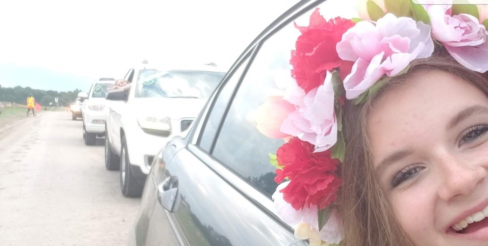
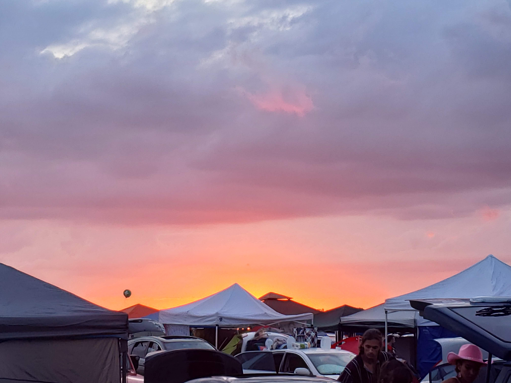
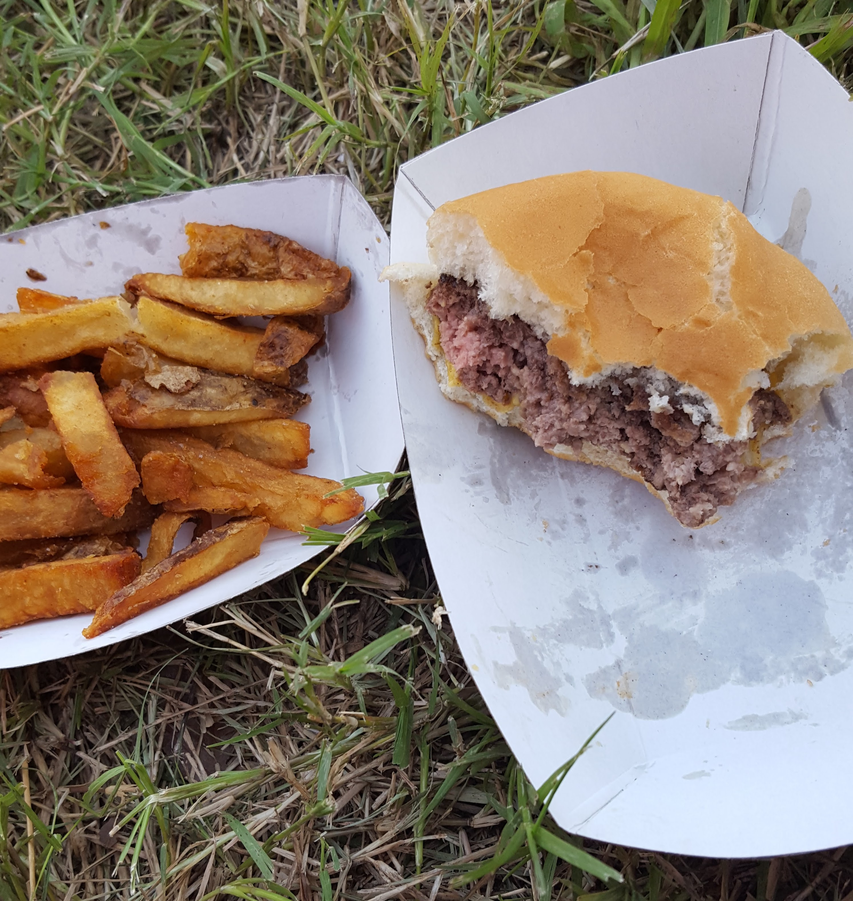
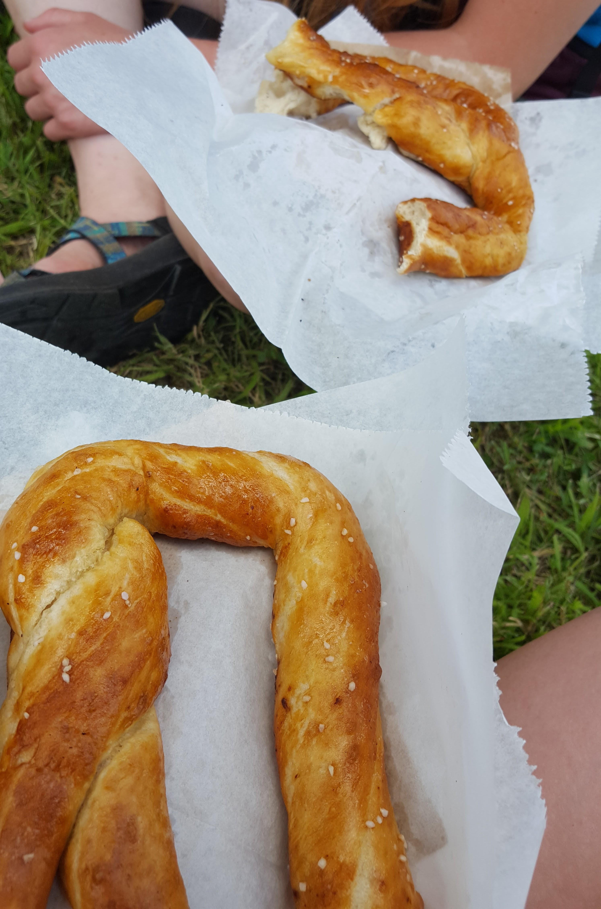
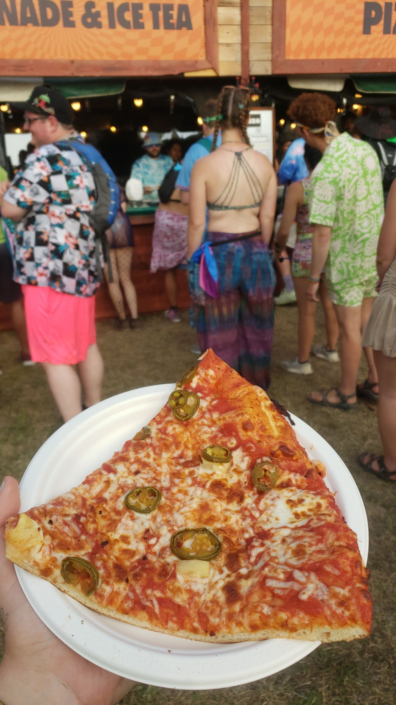
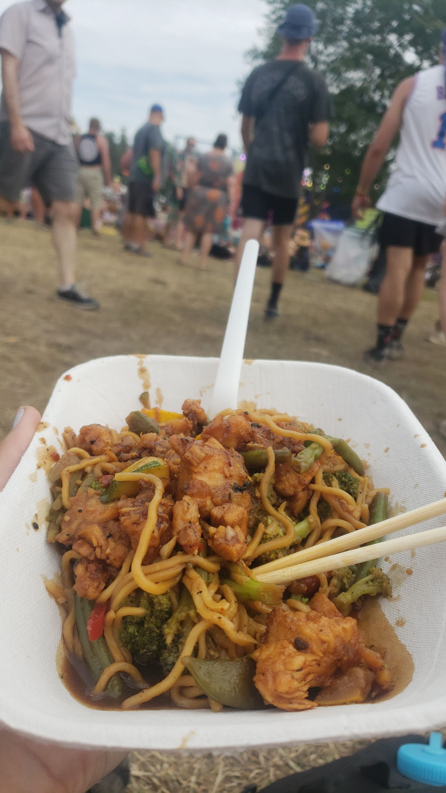
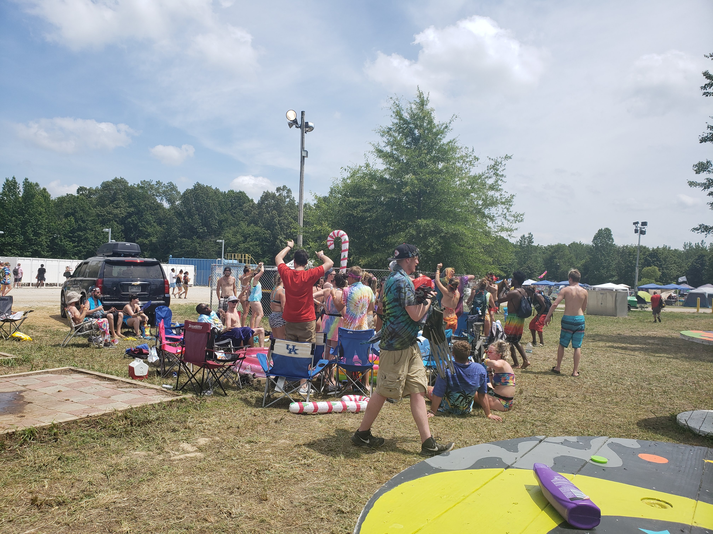
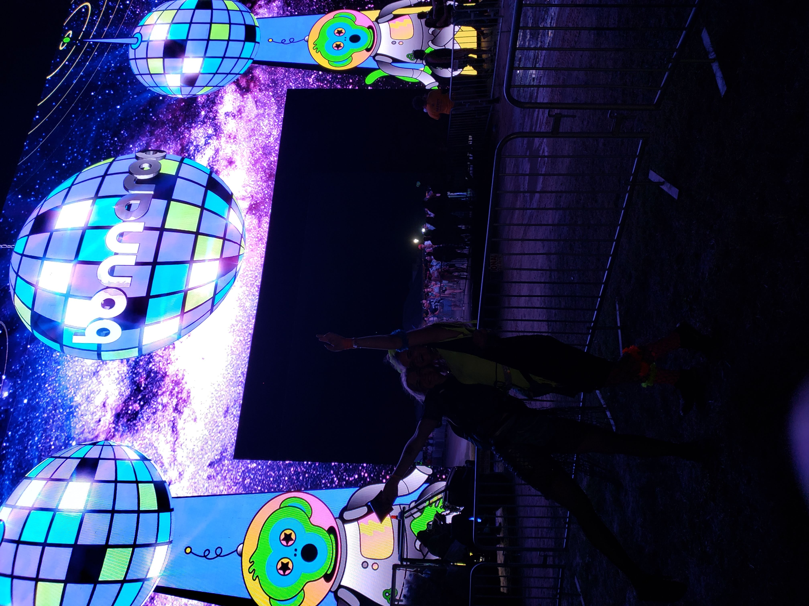

Preparation
A lot of preparation can go into camping for up to 6 days, and it’s different for everyone! After a consecutive 5 years going on 6, I have learned some things I personally prefer. One is preparing way ahead of time- I’m thinking about planning up to 6 months in advance. How much I'll be walking is the first thing I'm thinking about! Please prepare for a lot of walking (within your reason of course)! Then about my meal prep, how I want my set-up, what artists I want to see, if I want to look fashionable or just comfortable, who I want to go with if I have the option, preparing my car for the 3 hour drive while packed full of everything I need, the list can go on. Also, this is all knowledge from only General Admission tickets and camping, because if you’re something like VIP, likely all you have to bring is a suitcase with your clothes and hygiene/other essentials. I've gone more in depth with my personal prep for my preferred Bonnaroo experience! Preparation

Arrival and the Journey Before
If you’re like me and live within about a 100 to 150 mile radius of Manchester Tennessee, then you probably only have roughly 2 to 3 hours of a drive. I like to pack my car the night before I venture out because personally, I enjoy going early to spend all the time I can on the farm! I enter on Tuesday, some enter Wednesday or even Thursday, which is the first official day of the festival. However, depending on which day you enter is which camping pass you buy all at the same price. When you arrive in Manchester, the main entrance that leads to the farm is right by the exit of the highway. It’s a winding road with people to guide you until you reach a gravel lot with several volunteers and officers. You will be asked to step out of your vehicle and searched upon entry, so expect your packing to be picked through a little (there are criteria to what you can bring, find that list under “Extra Information”!). Then you reach the next line of volunteers who scan your ticket (which is your wristband) and parking pass (which is usually hanging on your rear-view mirror). YOU HAVE ARRIVED! Volunteers will always allow you to wait on your friends so you can all park together! You will be guided into your respected area whether it be GA, VIP, or specific Accessibility needs! In GA parking, everyone is parked in a line formation with 2 car's width between each line, one car's width being each vehicle’s campsite, and the other being the walking/driving path between. As soon as you park, you can start setting up your campsite directly beside your car! How exciting!
 Extra InformationVendors
Amongst the 150+ vendors within Bonnaroo, there is something for everyone on any type of diet or with any dietary restrictions. Several vendors sell food, but there are also vendors selling clothing, instruments, accessories, and other fun knick knacks usually hand crafted. There are vendors within Centeroo and Outeroo! So if you don’t feel like the trek to Centeroo, there are still small businesses right next to your campsite! I have always enjoyed spending Tuesday and Wednesday to simply check around every pod to see the different vendors and activities going on!
   Environment
As you walk through the different plazas, you will see so many fun things happening. Everyone is welcome! There are barn-type buildings that hold different activites throughout the festival, and they are all decorated so wonderfully different. It is common that some change each year as well, so make sure to visit them all!
Overall Experience
Bonnaroo has changed a lot over the years, though it doesn't take away from the welcoming and warm environment. Everyone is there to enjoy themselves, express themselves freely, meet new friends, and especially to have fun at every live performance possible. Spread love and radiate positivity!
